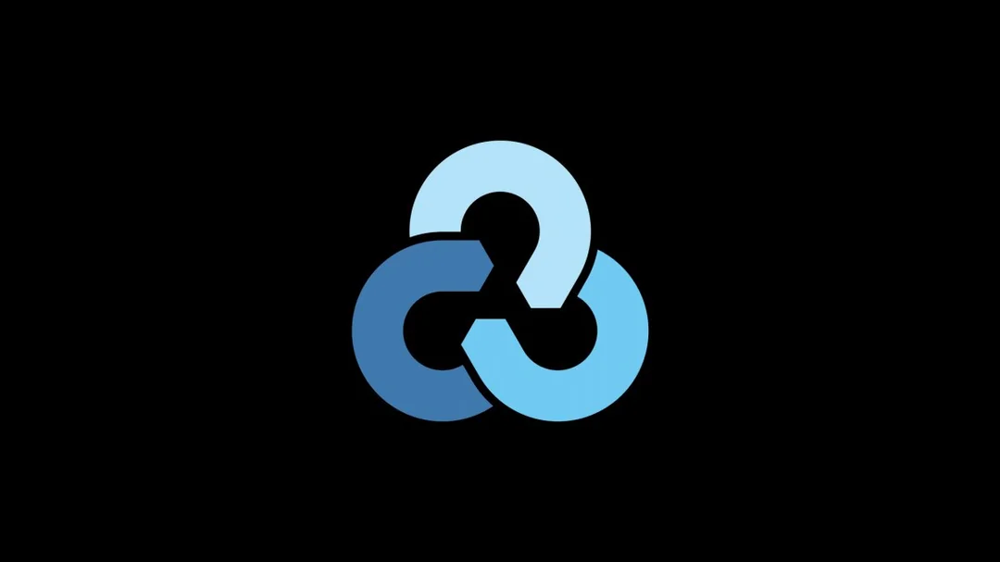

Futaba _ Webs 🕸🕸🎃🕸🕸
- The Hacker Who Laughs 🕸🕸🎃🕸🕸, Founder at Futaba_Webs 🕸🕸🎃🕸🕸
🃠Services
🃠Business Card
🃠Terminal
🃠Discord Server
🃠Blog
🃠Get started
🃠Resume
🃠Search Mode
🃠Latest News
🃠Catalogs
🃠Services 2
The Hacker Who Laughs 🕸🕸🎃🕸🕸
🕸 TCM Security 🕸
🕸 Personal Brand 🕸
🕸 Womens History Month 2 🕸
🕸 Why Futaba Does Cyber 🕸
🕸 Free Resources OR?... 🕸
🕸 Ex Machina 🕸
🕸 Confluence 🕸
🕸 Confluence2 🕸

🕸 Content Types 🕸
🕸 Goal Of Futaba 🕸
🕸 Vendors 🕸
🕸 Code Analysis 🕸
🕸 Cybers Flaw 🕸
🕸 Archetypes 🕸
🕸 FREE Or Paid?... 🕸
🕸 Subnetting 🕸
🕸 Spec vs Gen 🕸
🕸 The Apprentice 🕸
🕸 OOP 🕸
🕸 Certs/Skill 🕸
🕸 Evil HERO 🕸
🕸 TheKernel 🕸
🕸 One Above All 🕸
🕸 CrowdStrike 🕸
🕸 Your Journey 🕸
🕸 Prog Lang 🕸
🕸 Training Programs 🕸
🕸 Content Creation 🕸
🕸 Claude A.I. 🕸
🕸 WiCyS 🕸
🃠CONTACT ME
AnOnYmOuS
futaba.webs@gmail.com
New York, NY United States
Previous
1
2
3
4
5
Next
Is TCM Security Still Credible?
🃠Close 🎃
How to Build Your Personal Brand?
🃠Close 🎃
Womens History Month 2025
🃠Close 🎃
Why Futaba Does Cyber Security!?
🃠Close 🎃
FREE Resource? OR Opportunities?
🃠Close 🎃
Ex Machina Parlor
🃠Close 🎃
Confluence LockBit Ransomware
🃠Close 🎃
Confluence LockBit Ransomware (Part 2)
🃠Close 🎃
Futabas Cyber Security Content
🃠Close 🎃
The Goal Of Futaba_Webs
🃠Close 🎃
Should 3rd Party Vendors Be Trusted?
🃠Close 🎃
The Art of Code Analysis
🃠Close 🎃
Cyber Securitys BIGGEST Flaw!
🃠Close 🎃
Types Of Hackers
🃠Close 🎃
FREE Vs PAID Learning Which is Better?
🃠Close 🎃
Subnetting For Dummies
🃠Close 🎃
Specialist VS Generalist?
🃠Close 🎃
Bond Between Teacher And Student
🃠Close 🎃
OOP For Dummies
🃠Close 🎃
Do Certs Still Matter?
🃠Close 🎃
The Evil HERO
🃠Close 🎃
The Kernel
🃠Close 🎃
The One Above All
🃠Close 🎃
CrowdStrikes Foul Play
🃠Close 🎃
Documenting Your Journey
🃠Close 🎃
Best Programming Languages For Cyber
🃠Close 🎃
More Training Programs
🃠Close 🎃
How To Create Content
🃠Close 🎃
The KeyBoard Injection FrameWork
🃠Close 🎃
How to Get More Women In Tech
🃠Close 🎃
Search Mode
🃠Hot-Key Maps 🎃
🃠Close 🎃